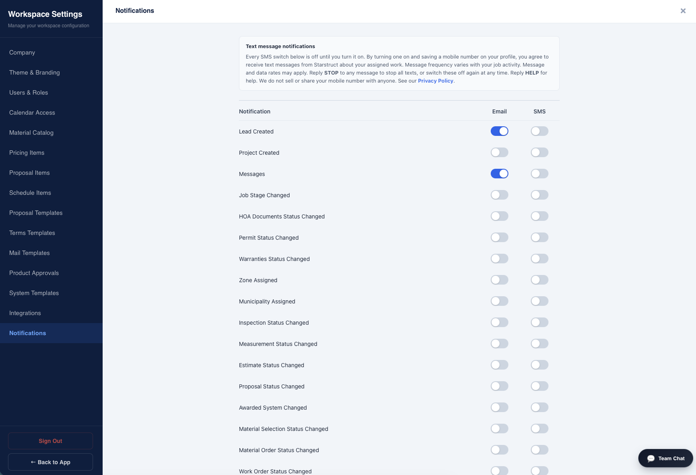
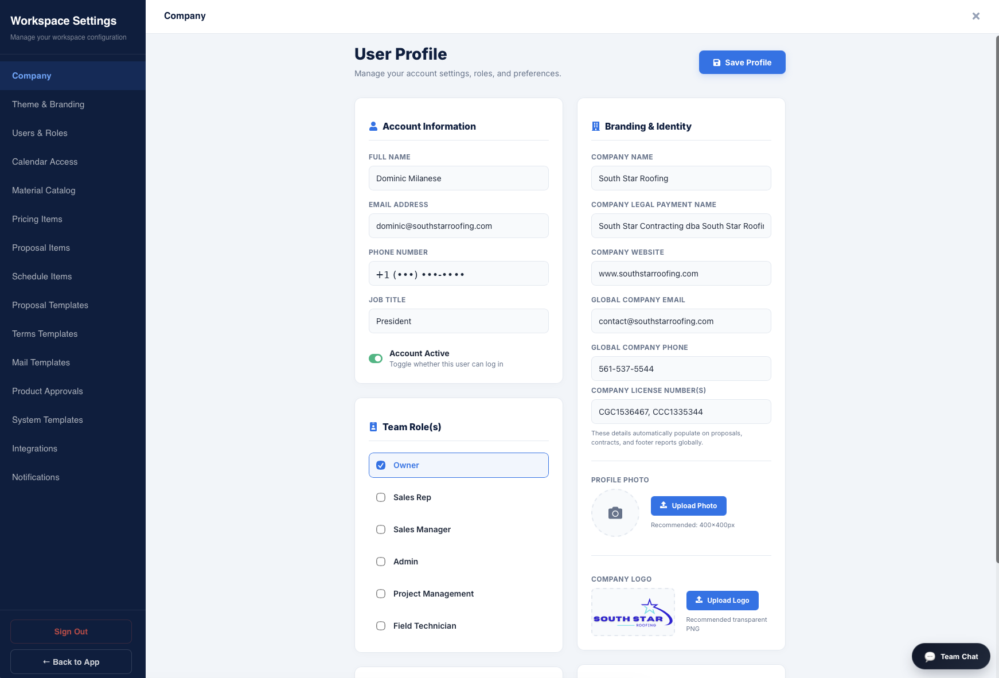

Last updated September 2026
Starstruct is work management software for roofing and construction contractors. Starstruct is the registered sender of the text messages described on this page. Messages go only to people who hold a Starstruct login and have switched them on themselves.
Starstruct is work management software used by roofing and construction contractors. This page documents how the people who use Starstruct consent to receive text message notifications about their assigned work, what those messages contain, and how to stop them.
These are operational alerts about assigned work. They are not marketing. They are never sent to homeowners, prospects, or the general public.
Only people who have been issued a Starstruct login — the employees and crew members of the contractors that use it — and who have individually switched on SMS notifications in their own account settings.
Each user enters their own mobile number on their own profile inside the application. Numbers are never purchased, rented, or imported from third parties, and there is no public sign-up for these messages. An administrator cannot switch SMS on for someone else.
SMS is off by default for every user and every notification type. Nothing is pre-checked or pre-filled. The user takes each of these steps themselves:
This wording appears directly above the toggles, word for word:
Text message notifications
Every SMS switch below is off until you turn it on. By turning one on and saving a mobile number on your profile, you agree to receive text messages from Starstruct about your assigned work. Message frequency varies with your job activity. Message and data rates may apply. Reply STOP to any message to stop all texts, or switch these off again at any time. Reply HELP for help. We do not sell or share your mobile number with anyone. See our Privacy Policy.


| Notification | Sent when |
|---|---|
| New lead | A new job lead is entered into the system |
| New message | A colleague posts a message on a job |
| Job photos uploaded | Photos are added to a job |
These are the exact formats sent. Bracketed values are filled in per message. Every message names Starstruct as the sender and carries opt-out instructions.
Frequency varies with each user's own job activity and with which switches they turned on. A typical user receives between zero and roughly ten messages on a working day. There is no scheduled send, no bulk send, and no campaign or blast messaging of any kind.
Message and data rates may apply under the user's own mobile plan. Starstruct does not charge users for these messages.
Reply START to resume, or switch the toggles back on. Reply HELP for help.
Mobile numbers collected for these notifications are used only to send the notifications described on this page. We do not sell, rent, or share mobile numbers or SMS consent with any third party, and no mobile information is shared with third parties or affiliates for marketing or promotional purposes. Numbers are transmitted only to our messaging carrier for the sole purpose of delivering these notifications, and are removed when an account is closed.
See our full Privacy Policy and Terms of Service.
Email: Contact@southstarroofing.com